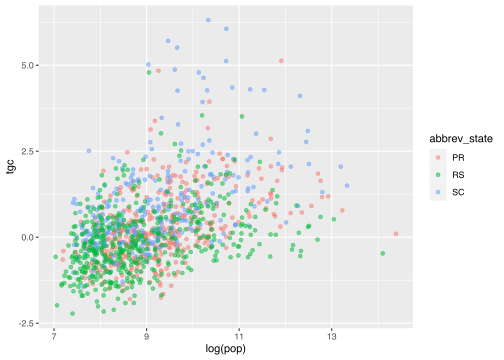

knitr::opts_chunk$set(
echo = FALSE,
message = FALSE,
warning = FALSE,
fig.align = "center",
dev = "svg",
fig.retina = 2
)| Região Metro | Estado | Populacao | Crescimento (%) | TCG | |||||
|---|---|---|---|---|---|---|---|---|---|
| 1991 | 2000 | 2010 | 2022 | 1991/2000 | 2000/2010 | 2010/2022 | |||
| São Paulo | SP | 15.444.942 | 17.879.997 | 19.683.975 | 20.743.587 | 1.47% | 0.88% | 0.40% | |
| Rio de Janeiro | RJ | 9.882.018 | 10.967.489 | 11.945.532 | 11.743.229 | 1.05% | 0.78% | −0.13% | |
| Belo Horizonte | MG | 3.923.376 | 4.833.018 | 5.429.969 | 5.733.075 | 2.11% | 1.06% | 0.42% | |
| RIDE DF | MG, GO, DF | 2.307.695 | 3.118.030 | 3.910.824 | 4.483.006 | 3.06% | 2.08% | 1.06% | |
| Porto Alegre | RS | 3.281.499 | 3.783.096 | 4.032.062 | 4.018.013 | 1.43% | 0.58% | −0.03% | |
| Fortaleza | CE | 2.548.173 | 3.165.796 | 3.741.198 | 3.903.945 | 2.19% | 1.53% | 0.33% | |
| Recife | PE | 2.984.130 | 3.408.742 | 3.766.191 | 3.807.484 | 1.34% | 0.91% | 0.08% | |
| Curitiba | PR | 2.140.981 | 2.813.397 | 3.223.836 | 3.559.366 | 2.77% | 1.25% | 0.76% | |
| Salvador | BA | 2.586.370 | 3.120.303 | 3.573.973 | 3.413.481 | 1.89% | 1.24% | −0.35% | |
| Campinas | SP | 1.874.231 | 2.348.059 | 2.808.906 | 3.178.864 | 2.28% | 1.64% | 0.96% | |
| Goiânia | GO | 1.278.255 | 1.704.497 | 2.130.646 | 2.548.356 | 2.92% | 2.05% | 1.39% | |
| Manaus | AM | 1.262.572 | 1.725.536 | 2.210.647 | 2.532.226 | 3.17% | 2.28% | 1.05% | |
| Vale do Paraíba e Litoral Norte | SP | 1.651.589 | 1.992.110 | 2.264.594 | 2.506.053 | 1.89% | 1.17% | 0.78% | |
| Belém | PA | 1.536.706 | 1.973.259 | 2.275.032 | 2.242.619 | 2.53% | 1.30% | −0.11% | |
| Sorocaba | SP | 1.257.172 | 1.603.205 | 1.871.162 | 2.173.709 | 2.46% | 1.41% | 1.16% | |
| Grande Vitória | ES | 1.136.841 | 1.438.596 | 1.687.704 | 1.880.843 | 2.38% | 1.46% | 0.84% | |
| Baixada Santista | SP | 1.220.249 | 1.476.820 | 1.664.136 | 1.805.451 | 1.93% | 1.09% | 0.63% | |
| Ribeirão Preto | SP | 1.115.558 | 1.308.298 | 1.511.140 | 1.647.728 | 1.61% | 1.32% | 0.67% | |
| Grande São Luís | MA | 957.123 | 1.225.383 | 1.492.370 | 1.646.004 | 2.50% | 1.81% | 0.76% | |
| Natal | RN | 943.393 | 1.172.299 | 1.409.021 | 1.517.549 | 2.20% | 1.69% | 0.57% | |
| Norte/Nordeste Catarinense | SC | 846.483 | 1.029.956 | 1.222.730 | 1.480.428 | 1.98% | 1.57% | 1.48% | |
| AU de Piracicaba-AU- Piracicaba | SP | 981.437 | 1.180.570 | 1.332.507 | 1.467.451 | 1.86% | 1.11% | 0.74% | |
| Florianópolis | SC | 629.050 | 816.419 | 1.012.233 | 1.356.862 | 2.64% | 1.97% | 2.28% | |
| João Pessoa | PB | 820.775 | 980.874 | 1.156.273 | 1.304.263 | 1.80% | 1.51% | 0.93% | |
| Maceió | AL | 853.662 | 1.054.405 | 1.227.396 | 1.300.609 | 2.13% | 1.39% | 0.45% | |
| RIDE Teresina | MA, PI | 853.287 | 1.008.198 | 1.150.959 | 1.245.942 | 1.68% | 1.21% | 0.61% | |
| Londrina | PR | 788.306 | 897.086 | 1.000.062 | 1.088.706 | 1.30% | 0.99% | 0.66% | |
| Vale do Rio Cuiabá | MT | 698.606 | 835.786 | 944.163 | 1.086.513 | 1.81% | 1.11% | 1.09% | |
| Aracaju | SE | 530.200 | 675.667 | 835.816 | 932.210 | 2.45% | 1.95% | 0.84% | |
| Feira de Santana | BA | 676.231 | 757.656 | 845.939 | 923.198 | 1.14% | 1.01% | 0.67% | |
| Maringá | PR | 524.130 | 617.116 | 716.918 | 851.829 | 1.65% | 1.37% | 1.34% | |
| AU de Jundiaí | SP | 467.671 | 580.131 | 698.724 | 843.514 | 2.18% | 1.71% | 1.46% | |
| Vale do Itajaí | SC | 451.712 | 558.165 | 689.731 | 841.672 | 2.14% | 1.94% | 1.54% | |
| RIDE Petrolina/Juazeiro | PE, BA | 449.853 | 565.877 | 686.410 | 832.621 | 2.32% | 1.77% | 1.50% | |
| Serra Gaúcha | RS | 509.210 | 624.123 | 735.276 | 800.536 | 2.06% | 1.50% | 0.66% | |
| Foz do Rio Itajaí | SC | 254.316 | 375.589 | 532.771 | 782.160 | 3.98% | 3.23% | 3.00% | |
| Vale do Aço | MG | 619.673 | 657.220 | 715.900 | 718.284 | 0.59% | 0.78% | 0.03% | |
| Campina Grande | PB | 524.805 | 564.813 | 606.047 | 651.619 | 0.74% | 0.64% | 0.56% | |
| Carbonífera | SC | 416.998 | 484.916 | 550.206 | 645.266 | 1.52% | 1.15% | 1.23% | |
| Cariri | CE | 421.410 | 498.268 | 564.478 | 633.326 | 1.69% | 1.14% | 0.89% | |
| Macapá | AP | 239.785 | 375.733 | 516.498 | 572.224 | 4.59% | 2.93% | 0.79% | |
| AU do Sul - Rio Grande do Sul | RS | 504.486 | 557.216 | 578.034 | 572.118 | 1.00% | 0.33% | −0.08% | |
| Cascavel | PR | 402.984 | 442.643 | 480.640 | 552.097 | 0.94% | 0.75% | 1.07% | |
| Contestado | SC | 416.465 | 468.621 | 500.298 | 539.288 | 1.19% | 0.60% | 0.58% | |
| Chapecó | SC | 354.779 | 383.812 | 433.790 | 535.157 | 0.79% | 1.12% | 1.63% | |
[1] "-2.23,-0.85" "-0.85,0" "0,0.5" "0.5,1.2" "1.2,2.1"
[6] "2.1,3.5" "3.5,6.32" "6.32,-0.85" 
